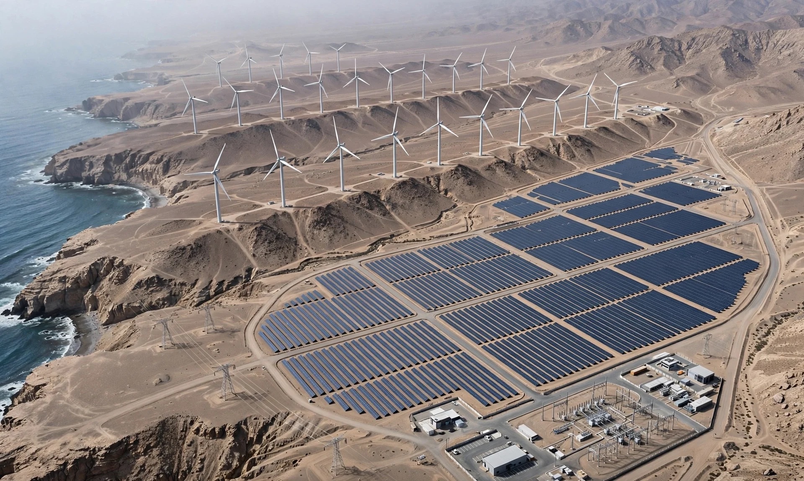
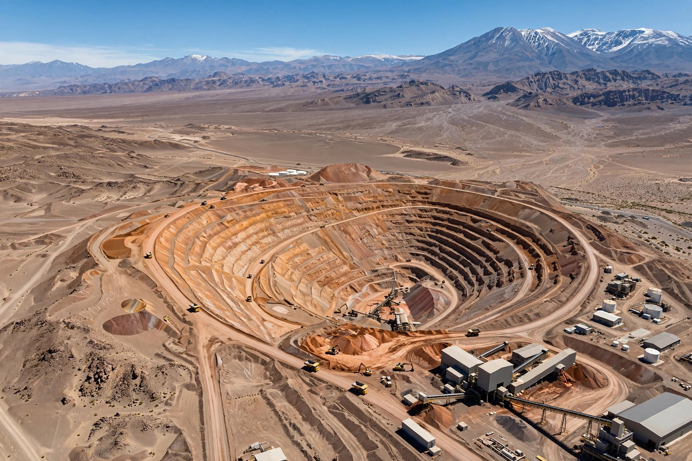
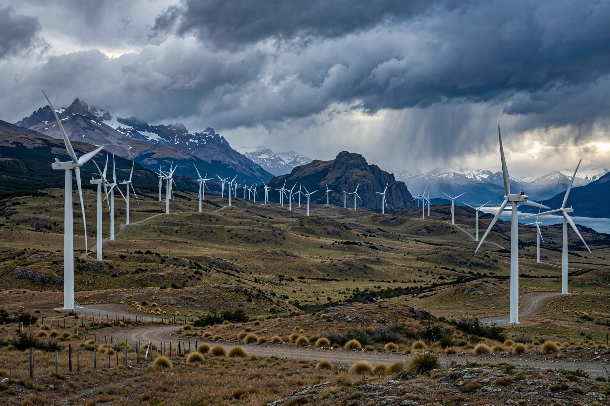
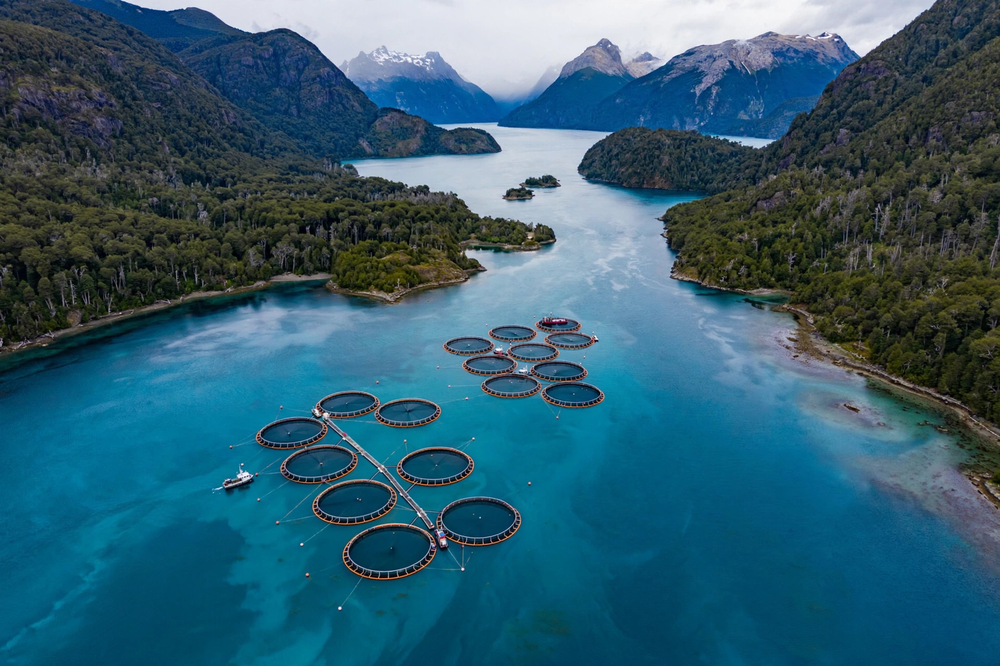
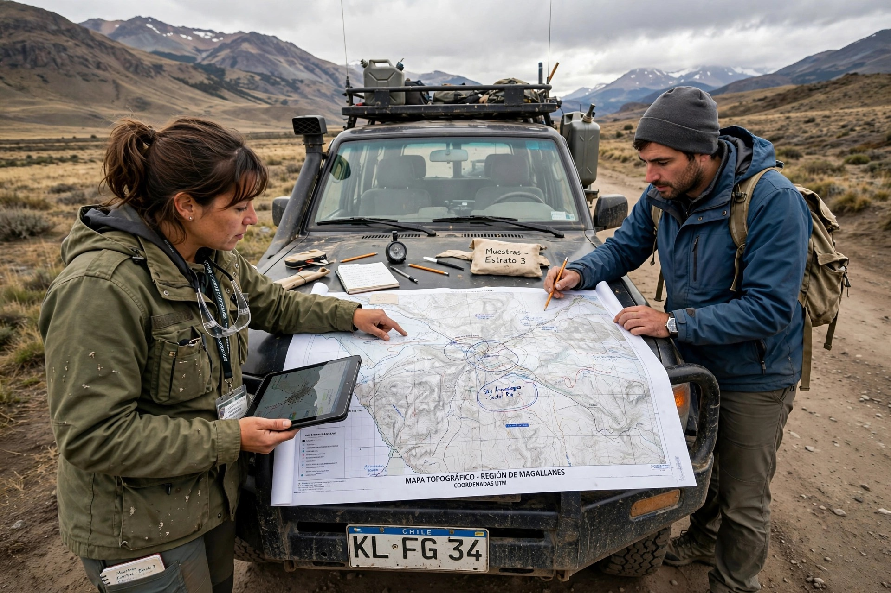

Acompañamos a empresas de minería, energía, infraestructura y acuicultura con estudios de medio humano, relacionamiento comunitario y consulta indígena técnicamente sólidos, trazables y defendibles ante el SEIA.

Proyectos
2007—2026
0
Año Fundación
Práctica continua desde hace 19 años
0+
Proyectos Desarrollados
EIA, DIA, due diligence, reasentamiento
0+
Sectores con cartera robusta
Minería, energía, infraestructura, acuicultura
0
Profesionales Staff Permanente
Antropología, sociología, geografía, derecho
El problema
Líneas base de medio humano débiles, no trazables, sin consistencia regulatoria.
→ Solución GISOC: Rigor técnico defendible
Relacionamiento tardío, sin mapeo de actores ni gestión de expectativas.
→ Solución GISOC: Estrategia temprana + gestión conflictos
Brechas vs estándares IFC, Banco Mundial, banca internacional.
→ Solución GISOC: Due diligence alineado a estándares
Acompañamos desde exploración hasta cierre de faenas. Transferencia de aprendizajes entre industrias reguladas.

Exploración a cierre de faenas, EIA, reasentamiento, controversias.

Transmisión, renovables, baterías, H2 y amoníaco verde.
Ferroviario, portuario, vial, residuos, saneamiento.

Tramitación y controversias en áreas protegidas, sur de Chile.
Propuesta de valor
Estudios sociales sólidos, trazables y consistentes con exigencias regulatorias y corporativas de alto estándar.
Comprensión territorial para trabajar con comunidades, pueblos indígenas y alta sensibilidad sociocultural.
Aprendizajes de minería, energía, infraestructura y salmonicultura puestos al servicio de tu proyecto.
Líneas base, capítulos EIA/DIA, diagnósticos territoriales, agendas técnicas y ciudadanas.
Estrategias tempranas, mapeo actores, vinculación y planes de inversión social.
Consulta indígena, pertinencia cultural, levantamientos etnográficos y análisis antropológicos.
Apoyo en sancionatorios, reclamaciones, invalidaciones, sentencias y documentación recursiva.
Planes de reasentamiento, receptores críticos y restauración de medios de vida.
Evaluación social para banca, inversionistas y entidades financieras internacionales (IFC).
Mediación, análisis de controversias y diseño de acuerdos sostenibles. [NUEVO]
Mapeo colaborativo con comunidades para uso territorial y gestión. [NUEVO]
Datos sociales, encuestas, procesamiento cuantitativo y cualitativo. [NUEVO]

Metodología
Diagnóstico territorial
Contexto social, cultural y económico, sensibilidad y riesgos.
Levantamiento riguroso
Cuali-cuanti, entrevistas, etnografía, encuestas, terreno.
Estrategia adaptada
Diseño a la medida del proyecto, territorio y estándar.
Implementación y defensa
Ejecución, supervisión, medición y soporte ante SEA y banca.
Dirección
Antropóloga U. Chile • Gerenta General • Fundadora 2007
Especialista senior en medio humano con 20 años en evaluación ambiental, relacionamiento comunitario, consulta indígena y due diligence socioambiental en minería, energía, infraestructura y acuicultura. Postítulos en conflictos socioambientales, derechos indígenas y riesgos sociales.
Antropólogo U. Chile • MSc LSE • PhD (c) Edimburgo
15+ años en estudios socioambientales mineros, energía e infraestructura. Especialista en políticas públicas medioambientales, participación ciudadana, gobernanza colaborativa, DDHH y empresas, y transiciones energéticas.
Contacto
Respuesta directa de la dirección en 24 horas. Conversemos de tu desafío SEIA, medio humano o relacionamiento.